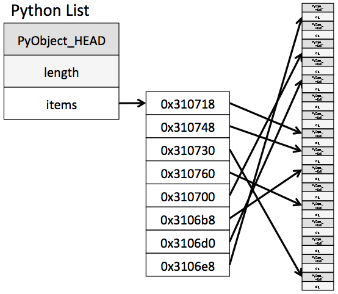

Explore the differences between lists & arrays for sequential data structures.
Examine how implementation choices can affect performance using stacks & queues.
Learn how to implement hash tables, the data structure that powers Python’s dict.
What are data structures?
Data structures are ways of organizing data in working memory. They are not purely inventions of computer science, but reflect real-world patterns of organizing information.
Data structures like stacks, queues, and trees mimic the way we already think about the world.
A stack of documents on a desk has the same properties as the stack data structure: the first document finds its way to the bottom of the stack as new ones come in & the document on the top of the stack gets your attention. The queue data structure even more clearly behaves its real-world counterpart: standing in a line being processed by order of arrival is a regular occurrence. And trees map to all kinds of hierarchical relationships: genealogy, organizational structure, file systems, HTML.
Data structures help us model real-world scenarios and play an essential role in writing performant programs. As we’ll see, the choice of data structure can often make a big difference in the complexity class of an algorithm.
Arrays
We’ll start by looking at one of the most fundamental data structures: arrays.
Arrays are collections of items that are stored in contiguous memory.
The RAM in your computer can be thought of as a sequential set of boxes that can store individual values. The operating system and programming language assign these blocks to your program as it requires memory for variables.
If you were running a Python program with variables:
s ="Hello"x =100*100y =36912
A snapshot of that memory might look like:
Address
Owned by
Contents
0x7000-0x8000
Safari
…
0x8016
your program
H
0x8020
your program
e
0x8024
your program
l
0x8028
your program
l
0x8032
your program
o
0x8090-0x8400
Spotify
…
0x8500
your program
10000
0x8504
your program
36912
0x8600-0x9000
Safari
…
This is a simplified version showing a small range of memory. The important details:
Each location in memory has a sequential address associated with it.
The memory is allocated in blocks of a standard size (here I am using 4 byte blocks).
Programs are not guaranteed contiguous memory, both your program and Safari have disjoint chunks of memory.
It is often faster to access contiguous memory than to seek around at random within this space.
An array is a data structure that consists of a block of contiguous memory to store many similar items near one another.
In a language where we can request specifically sized blocks of memory (such as C) you might have:
// this is C code, not Pythonint my_array[5]={1,2,3,4,5};
This would allocate memory owned by your program in a contiguous block of 5 integers:
Address
Contents
0x10000
1
0x10004
2
0x10008
3
0x10012
4
0x10016
5
The variable array would track the starting address, here 0x10000.
Code that reads or sets a particular value such as my_array[3] = 100 then needs to compute the offset.
Since we have contiguous memory and a fixed block size (of 4 bytes for an integer) the language can perform these operations in constant \(O(1)\) time.
memory_location = initial_offset + block_size * index
So to find my_array[3] that would be:
memory_location = 0x10000 + 4 * 3 = 0x10012
This is why arrays are zero-indexed! The first box with index=0 becomes initial_offset + block_size * 0, or just initial_offset.
Each array will have its own initial_offset and block_size, the latter determined by the type of data being stored.
Python’s list
In Python, list is implemented as an array.
It has two properties that not all arrays share however:
It can store items of heterogeneous type.
It can expand as needed, we do not need to pre-define how many elements are in the list.
Arrays must have fixed block sizes for the arithmetic above to work, this seems like it may pose problems for both of these use cases.
To allow heterogeneous data (including data that may change size), the object stored in each cell of the array is a C type (called PyObject) that we do not interact with directly from Python.
Instead of each box storing the actual value, they store the PyObject, which in turn stores a pointer or reference to the actual data, which will be stored elsewhere:

Now instead of a direct lookup, the index-based lookup returns the address of the actual data. This remains \(O(1)\) since this extra step is a constant operation, and will not take more time as the number of items grows.
Allowing an array to grow takes another trick: we are going to over-allocate memory.
When you create a new list Python allocates a block of memory that is large enough to hold the list, and then some extra space.
x = [1, 2, 3]
The language might allocate eight memory blocks instead of three.
Note 1: Numbers for illustration only, implementation details will vary.
Note 2: I am not showing the extra level of indirection here, instead using the notation -> 1 to remind you that the data stored in that block is not the actual value, but a reference to it.
Address
Contents
0x5000
–> 1
0x5004
–> 2
0x5008
–> 3
0x5012
0x5016
0x5020
0x5024
0x5028
Now when you call x.append(4), Python has room for it already.
This keeps the operation \(O(1)\), but at the cost of keeping around some empty blocks of memory.
But this would only allow our lists to grow up to this arbitrary capacity. What happens in practice is that Python will grow the capacity when some threshold is exceeded.
In our hypothetical list, we are now using four of the allocated eight blocks.
x.append(5)x.append(6)x.append(7)x.append(8)x.append(9) # what happens?!
As we know, this code will run fine! Python tracks how many cells are used, and if an insertion would cause the capacity to be exceeded it moves the entire list.
It cannot just expand in place, since the adjacent memory is likely used by other variables or even other programs. This means that the occasional insertion does need to do more work, copying the list over to a new block of contiguous memory.
So after the additional insertions our list may have had it’s items moved, and new additional capacity allocated:
Address
Contents
0x9100
–> 1
0x9104
–> 2
0x9108
–> 3
0x9112
–> 4
0x9116
–> 5
0x9120
–> 6
0x9124
–> 7
0x9128
–> 8
0x9128
–> 9
0x9128
0x9128
0x9128
Notice it again over allocates. Because this move can be expensive, it will add additional padding so that the next move does not come right away.
Because lists (arrays) are typically accessed much more often than they grow, this is a good trade-off in most cases.
In practice, the amount of padding that Python adds would affect the memory usage vs. performance of this data structure.
Linked Lists
In Python we typically use a list or tuple to store an ordered sequence of items. This is contrasted with an unordered collection, such as a set.
There is another data structure that is useful for ordered sequences:
Linked lists are ordered collections of items, but use non-contiguous memory.
Each item in the list contains a pointer to the next item in the list.
# data-structures/linked_list.pyclass Node:def__init__(self, value, next=None): self.value = valueself.next=nextclass LinkedList:def__init__(self):self.root =Nonedef__len__(self): count =0 cur =self.rootwhile cur isnotNone: count +=1 cur = cur.nextdef append(self, value):# new tail node new = Node(value)# special case for first nodeifself.root isNone:self.root = newelse: cur =self.root# iterate to end-1while cur.nextisnotNone: cur = cur.next# append node cur.next= newdef prepend(self, value):# add new node that points at old root new = Node(value, self.root)self.root = newdef__str__(self): s ="" cur =self.rootwhile cur: s +=f"{cur.value} -> " cur = cur.next s +="END"return sll = LinkedList()ll.append(1)ll.append(2)ll.prepend(0)ll.prepend(-1)ll.append(3)print(ll)
-1 -> 0 -> 1 -> 2 -> 3 -> END
To use an implementation of a doubly-linked list, we use collections.deque.
This stores forward & backward references allowing bidirectional traversal at a slightly higher cost.
Linked List vs. Array
Operation
Linked List
Array
Access by Index
O(n)
O(1)
Insert/Delete at Start
O(1)
O(n)
Insert/Delete at End
O(1)
O(1)*
Insert/Delete at Middle
O(n)
O(n)
It is also common to have a doubly-linked list, where each item contains a pointer to the next item and the previous item.
Stacks
One of the most common data structures is the stack.
A stack is a data structure that enables Last In, First Out processing.
LIFO means that the last item added to the stack is the first item removed.
The common analogy is a stack of plates.
You also deal with a stack whenever calling functions: the last function called is the first to return.
Insertions & deletions happen on the same end of the data structure.
Call Stack Example
def a():print("a on call stack") b()print("a off call stack")def b():print(" b on call stack") c()print(" b off call stack")def c():print(" c on call stack")print(" c off call stack")a()
a on call stack
b on call stack
c on call stack
c off call stack
b off call stack
a off call stack
What data structure is best for a stack?
Example Implementation
class Stack:def__init__(self):# because it is faster to add/remove at the end of a list# we'll treat the end of the list as the top of the stackself.items = []def push(self, item):self.items.append(item)def pop(self):returnself.items.pop()def__str__(self):"""Return a string representation of the stack.""" output = [] output.append(f"[ {self.items[-1]} ] <- top")for item inreversed(self.items[:-1]): output.append(f"[ {item} ]")return"\n".join(output)
In a queue, the first item added is the first item removed. First In, First Out, or FIFO.
The common analogy is a line at a grocery store.
Insertions & deletions happen on opposite ends of the data structure.
What data structure is best for a queue?
Example Implementation
class ArrayQueue:def__init__(self, _iterable=None):if _iterable:self._data =list(_iterable)else:self._data = []def push(self, item):# adding to the end of the list is faster than the frontself._data.append(item)def pop(self):# only change from `Stack` is we remove from the other end# this can be slower, why?returnself._data.pop(0)def__len__(self):returnlen(self._data)def__repr__(self):return" TOP -> "+"\n ".join(f"[ {item} ]"for item inreversed(self._data) )
10000x ArrayQueue.pop, took 1.1310574589297175
10000x DequeQueue.pop, took 0.00019958405755460262
DequeQueue is 99.982% faster
Queue Performance
Operation
ArrayQueue
DequeQueue
push
O(1)
O(1)
pop
O(n)
O(1)
Hash Tables
A hash table is a data structure that maps a unique identifying key with some associated value.
A dict is an implementation of a hash table.
If all we wanted to do was associate items with keys, we could store a list of (key, value) tuples in a list.
Then to look up an item, we would search the list by iterating through and looking for the key. This would be \(O(N)\) (or \(O(\log N)\) if we can keep the table sorted).
Looking up items in a hash table or dictionary is an important task, almost everything in Python relies on the performance of dictionaries.
As we’ll see, we can instead write algorithms that will make modifying & accessing individual hash table cells \(O(1)\).
Hashing
A key piece of writing a hash table is to use a hashing function.
This is a function that will convert a value (often a string) to an arbitrary but consistent integer.
To see how this will help, let’s first model a simple hash table with fixed capacity of 10 using a list of 10 empty elements:
capacity =10storage = [None] * capacity
For simplicity we’ll stick to string keys.
When we get a key-value pair, we need to assign it a bucket.
How can we write a function that takes a string and assigns it to a bucket?
Turn the string into a number. This is our hash function
Take (number % capacity) and assign the item to that cell in our array.
For example:
def strhash(key):# ord converts a character to it's numeric representation# ord("A") == 65# ord("z") == 122# etc.returnsum(ord(letter) for letter in key)
for word in ("bear", "fox"):print(f"strhash({word}) =", strhash(word), " % 10 = ", strhash(word) %10)
# we can use the numeric indices from our hash to read and write from storagestorage[strhash("bear") % capacity] ="cub"storage[strhash("fox") % capacity] ="kit"for word in ("bear", "fox"):print(f"A baby {word} is called a {storage[strhash(word) % capacity]}.")
A baby bear is called a cub.
A baby fox is called a kit.
Collisions
If two pieces of data hash to the same value (modulo capacity), we have a collision. Attempting to store the key ‘kangaroo’ would generate such a collision:
While a better hash function might have spread these values out more in the table, no matter what we’ll eventually see collisions.
The second thing we’ll need in addition to our hash function is collision resolution.
Collision Resolution
Like hash functions, we have choices available to us.
The two most common solutions are separate chaining and open addressing.
Separate Chaining
In this approach each hash cell itself contains a linked list. (Our underlying structure is then an array of lists.)
Whenever two keys collide, we will just append the new (key, value) pair to the end of the list.
TODO: draw picture
The other family of approaches is open addressing.
This approach includes many algorithms that resolve the collision by picking a new location within the still-flat array, but we will focus on linear probing.
When attempting to write to a key that collided, we will look and see if the next cell is open, and if not that, the next, and so on.
# NOTE: this implementation is intentionally incomplete!def set_with_linear_probe(ht_storage, key, value):""" add a key to our hash table using linear probing algorithm """ capacity =len(ht_storage) index = strhash(key) % capacity# search until a space is foundwhileTrue:if ht_storage[index] isNone:# a space has been found, add and exit the loop ht_storage[index] = valuebreakelse:# move forward looking for space index +=1
Now, when we see a collision, we walk forward a step.
‘joey’ is now stored in the second index, since index 0 was full.
TODO: show storing keys as well
When does this still fail?
If the hash value is near the end of the list, it may reach the end before finding a space. In this case, we wrap around, if there is no room to move forward in the list we loop back to index zero, similarly to how our % capacity operation works.
Eventually however, there will not be any room left in the hashtable.
Resizing & Rehashing
Like Python’s list, we will maintain some empty cells, additional capacity beyond what is being stored.
It is tempting to just grow the capacity:
ht_storage += [None] * 10
But what happens if we do this?
All of our access rules are based upon hash % capacity!
With positions 11-19 now available, the correct location for items will have changed.
Since we use the hash to look items up as well as set them, this means that items would go missing if capacity changed!
Instead, we have to rehash.
This means we need to go through all items & compute new hashes whenever we resize.
When to rehash?
In practice, we will want to keep our usage close to 50% of our capacity.
If you were to wait until the number of items was very close to capacity, the linear probing would be on average \(O(N)\).
Consider the case where our capacity is 10 and we have 9 items already.
It would seek forward, but all but one cell would be occupied, so it would be searching through \(O(N)\) spots. (In truth closer to N/2, but still \(O(N)\) growth.)
With 50% capacity, and a good hash function that evenly spreads items through our table, it would typically only step forward 0 or 1 space, keeping average runtime close to \(O(1)\).
Hash Table Performance
The performance of our hash table is determined by the algorithms we choose for our hash function and collision resolution.
We are aiming for average performance of \(O(1)\), but there will be cases that become \(O(N)\) as we’ve seen.
Operation
Average
Worst Case
lookup
O(1)
O(n)
insert
O(1)
O(n)
delete
O(1)
O(n)
A key property for hash tables is that we do not need to linearly search through them for our data.
If you find yourself scanning every element in a hash table, you’re doing something wrong.
Polynomial Hash Function
A good hash function will evenly distribute values across the collection.
This can be visualized by imagining the worst possible hash function:
def badhash(key):return7000# every key hashes to same value
This maximizes our collisions. While we can resolve this with linear probing, we wind up with a situation where each item is just stored in the next available spot, and we’re back to \(O(N)\) run time.
The strhash we defined above isn’t much better in practice: strings tend to be short and use common letters.
strhash("cat") == strhash("act")
and
strhash("car") is just two away from to strhash("cat")
Performance will improve if our hash function distributes the values more evenly.
A common pattern is to use a polynomial hash function.
Where: - $x_0…x_i $ is the sequence - \(k = len(x)\) - \(c_i\) is the numeric value of the character \(x_i\) (\(ord(x\) in Python) - \(p\) is an arbitrary constant. - and \(m\) is the size of the collection.
An effective approach is to use Horner’s method to compute a polynomial whose coefficients are the integer values of the characters in a string: